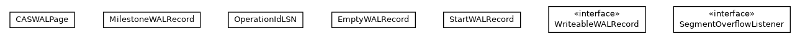

JavaScript is disabled on your browser.
Skip navigation links
Overview
Package
Class
Use
Tree
Deprecated
Index
Help
Prev Package
Next Package
Frames
No Frames
All Classes
Package com.orientechnologies.orient.core.storage.impl.local.paginated.wal.common

Interface Summary
Interface
Description
SegmentOverflowListener
WriteableWALRecord
Class Summary
Class
Description
CASWALPage
EmptyWALRecord
MilestoneWALRecord
OperationIdLSN
StartWALRecord
Skip navigation links
Overview
Package
Class
Use
Tree
Deprecated
Index
Help
Prev Package
Next Package
Frames
No Frames
All Classes
Copyright © 2009–2025
OrientDB
. All rights reserved.